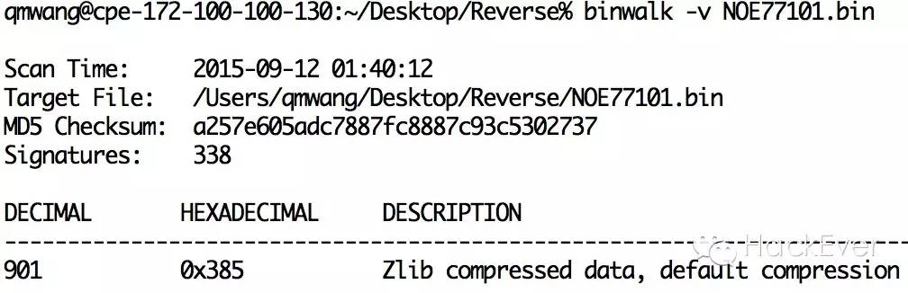
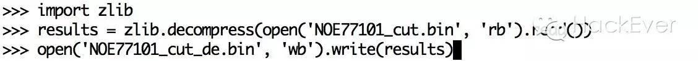

施耐德PLC以太网模块固件后门引发的血案(二)
封面图来自Norse IPViking Live实时互联网攻击流量可视化，它用直观的方式告诉用户网络攻击无时无刻不在身边，同时让安全从业者意识到我们被赋予的神圣使命。Mission began。
http://map.norsecorp.com/
上篇文章主要分享了关于施耐德PLC以太网固件后门漏洞CVE-2011-4859简单的分析和利用方式，这篇还将围绕硬编码后门这个主题，分享针对二进制固件文件（wwwroot\conf\exec\NOE77101.bin）的分析思路。
施耐德NOE77101以太网模块固件文件已经上传至Github，我们可以一起来分析，其实通过上篇文章的方法完全可以通过FTP后门自己下载一份。
https://github.com/ameng929/NOE77101_Firmware
我们将用到的分析工具有Binwalk、IDA以及WinHex等。相信做二进制逆向分析的朋友应该非常熟悉。
拿到固件文件首先需要了解文件结构、编程语言指令集、运行系统、文件压缩格式等信息。
Binwalk开跑，可以看出从0x385位置后为Zlib压缩格式。

也可以WinHex直接查看二进制文件，Pattern字节为78 9C为Zlib算法压缩格式，另外1F 8B为gzip算法、5D 00 00 80为LZMA算法，Binwalk就是根据这种方式来判断文件格式。
直接将0x385之前的部分截掉，再调用zlib库解压并保存为NOE77101_cut_de.bin。

再来Binwalk，发现输出信息多了。包含LZMA压缩格式的数据、HTML、XML文件、系统内核固件以及重要的字符串信息等。
我们可以通过Binwalk固件分析工具结合dd文件提取工具，对于指定位置的数据进行提取、分析，甚至可以更改、添加文件内容再重新合并、压缩成我们定制的固件文件上传至设备，强制其更新来实现恶意功能。
Unix系统工具Strings可以帮助我从二进制文件中提取字符串或者Binwalk -S功能，列举一些重要的信息，如设备CPU为PowerPC，BSP版本为1.1/2以及Binwalk中显示出的固件依赖系统VxWorks WIND kernel version "2.5"。
PowerPC处理器虽然我们接触不多但一定听说过，早期苹果电脑以及后期IBM Power等系列计算机都使用了这款处理器，PowerPC作为RISC精简指令系统的典型代表。
那么VxWorks操作系统也许大家听都没听过。
但下图这些，你们一定有所了解。
VxWorks 操作系统是美国WindRiver（风河）公司于设计开发。它以其良好的可靠性和卓越的实时性被广泛地应用在通信、军事、航空、航天等高精尖技术及实时性要求极高的领域中，如卫星通讯、军事演习、弹道制导、飞机导航等。在美国的 F-16、FA-18战斗机、B-2 隐形轰炸机和爱国者导弹上，甚至在火星登陆的探测器也都使用了VxWorks系统。最新的VxWorks7的口号是——为全球智能连接设备和系统提供动力。
以后会单独出系列文章围绕VxWorks系统的安全机制和漏洞来带大家了解这个看似高大上的操作系统。
铺垫介绍部分到此，在探明了系统平台和固件指令架构的基础上我们来上逆向利器——IDA。
由于固件本身的特殊性，与普通逆向步骤相比多了以下三部分：
需要修复代码函数位置
需要确定固件代码段基址
需要重构符号表
IDA加载固件后使用PPC Big-endian（PowerPC大端）处理器类型。
打开后发现由于找不到代码段起始地址从而反编译失败，没关系，调用Ruben大神的IDC脚本。该脚本通过在代码中找到PowerPC压栈指令"94 21 FF ?"的方式对函数位置进行修复。
http://www.reversemode.com/images/stories/schneider/files/fix_functions_ppc.idc
执行后发现IDA已经成功进行了反编译并且识别出了代码块。接下来需要重定位代码段基址。
找到一条相对寻址方式的lis指令，观察地址后面的@ha确定基址为0x10000，这是PowerPC汇编的特性问题，这里不详细说，可以看这个blog：
http://blog.chinaunix.net/uid-20663797-id-35772.html
在Rebase program...中修改基址位置后需要重构符号表方便逆向分析。
不怕，困难的地方总有Ruben大神在，执行重构符号表脚本的前提是需要先确定符号表在固件的具体位置，下图应该大家能看明白。
http://www.reversemode.com/images/stories/schneider/files/vxworks_symtable.idc
在代码末尾部分寻找有明显分界的起始和结束位置，由此判断符号表的其实位置为0x311E64、结束位置为0x3393A4。将位置输入脚本中，执行后发现——世界如此美好。
经过分析，代码调用关系如下：
老版本固件中usrNetworkInit—》userNetAppInit函数默认调用telnetInit来开启telnet服务的问题已经在新版本固件中修复，同时usrToolsInit中默认调用usrWdbInit开启wdb服务的问题也解决了，但我们来看usrAppInit，固件后门账户还是存在。
查看VxWorksk开发手册，其中对于loginUserAdd函数的描述:
其中也说道Password提交的参数为经过vxencrypt加密后的值，这也符合逆向发现的固件的密码。但问题来了，经过哈希加密后的密码我们怎么利用呢？
Rapid7 研究员HD Moore曾经发现VxWorks 5.x系统默认加密方式存在缺陷，能够通过特殊方法进行密码破译。我们来简单分析下vxencrypt加密算法：
加密过程：
在第一个for循环中密码字符串逐字节与位置下标相乘再按位进行异或操作，然后将每一个字符的运算结果累加起来算出passwdInt。
passwdInt值与magic相乘再转化为String类型。
字符串逐字符与'3'、'7'、'9'进行比较，加相应的值。
如果通过第一步计算后的passwdInt为'0123456789'通过运算将得到加密密码为'QRSbcdeyz9'，也许你已经看出这种加密方式的弱点了，可以通过随机生成密码来构建一个序列化的输入密码和passwdInt的对应表，同时passwdInt与输出密码之间也可构建对应表，这样输入密码和输出密码讲通过长度有限的Int类型passwdInt打通，这样我们就能通过查表的方式由输出密码得到输入密码。相比于MD5、SHA1等加密算法，vxencrypt加密算法由于加密方式问题导致密文长度受限，以至于存在弱点。
http://cvk.posthaven.com/how-to-crack-vxworks-password-hashes
罗列一下6.4固件中的后门账户：
sysdiag bbddRdzb9
fdrusers bRbQyzcy9b
USER cdcS9bcQc
ntpupdate See9cb9y99
fwupgrade （通过ComputePasswd函数计算密码）
关于施耐德NOE77101固件后门的分析到此告一段落，欢迎大家一起来分析讨论，关于此设备的入侵方式我们可以大开脑洞，我主要围绕后门来分析，但还有很多可以利用的方式。比如大家有试过后门账户登录Web管理界面么？还有很多设备开放了tftp服务（port69）或者rpcbind服务（port111），这个rpcbind服务就是VxWorks系统调试服务WDB，这个端口可以dump内存信息，msf也有相应的模块。另外对于固件我们还能和web配合起来做很多邪恶的事。太多了，这些都说一遍估计还能写好多篇。先到这里，期待你们的反馈，另外欢迎工控物联网安全爱好者加入微信群一起交流。
祝周末愉快: )